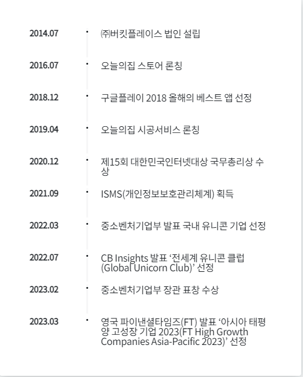
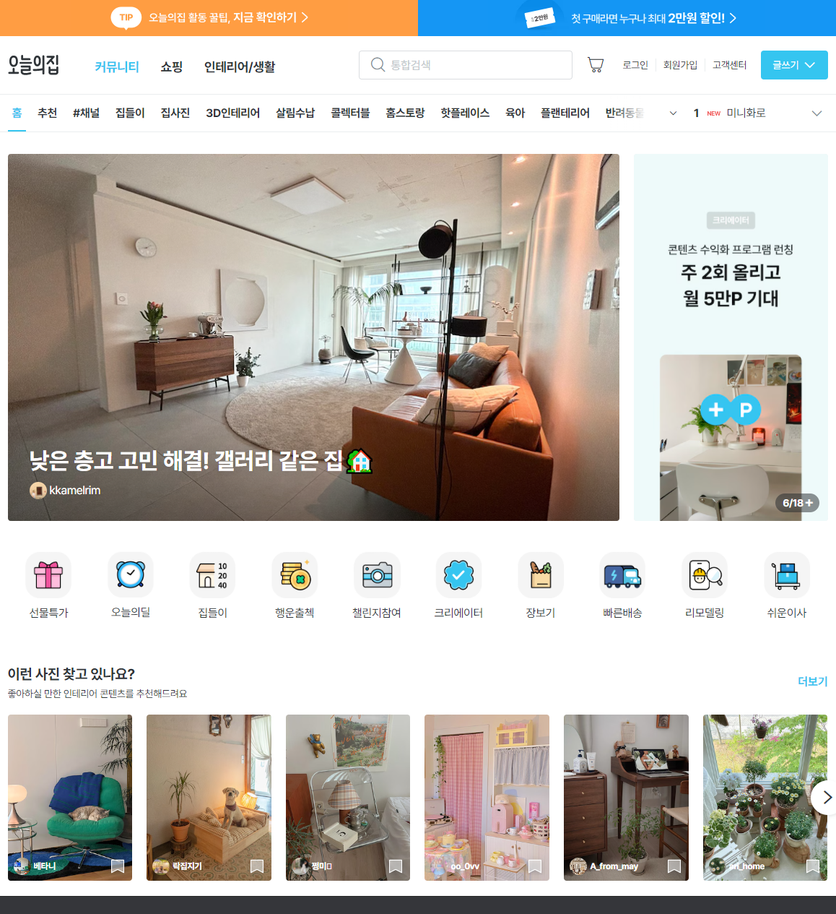
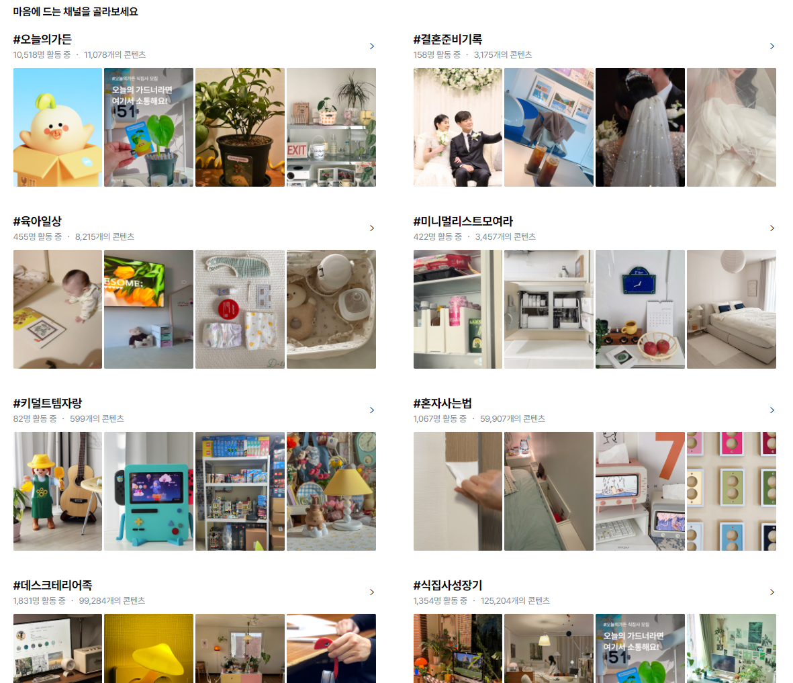

BLESS NET 경쟁사 홈페이지
- 경쟁사 1 오늘의 집
- 경쟁사 2 당근
- 경쟁사 3 디시인사이드
전 세계 사람들의 꿈을 현실로 만듭니다.
꿈꿔왔던 시간을 공간에 담는 여정.
우리는 라이프스타일을 이렇게 정의합니다.
나의 취향을 발견하고, 좋아하는 것들로 일상을 채우는 것은
삶을 더 풍요롭고 의미 있게 만드는 것과 같기 때문입니다.
오늘의집은 자신의 취향을 가진 커뮤니티 유저들과 함께
영감을 발산하는 콘텐츠와 일상 실현을 돕는 커머스를 연결하여
각자가 원하는 라이프스타일을 쉽게, 편하게, 즐겁게 만들어가도록 돕습니다.
오늘의집 연혁

오늘의집 최초 홈페이지

카테고리 및 광고시스템

채널(해시태그?)

Document
Set color